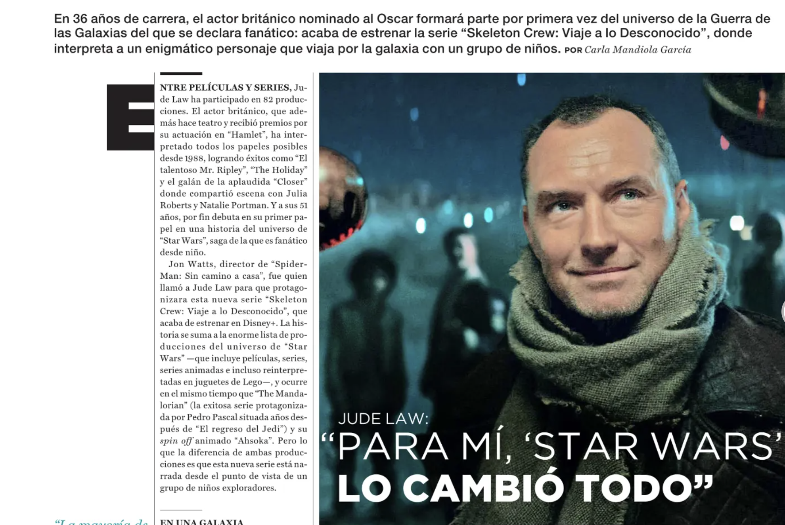
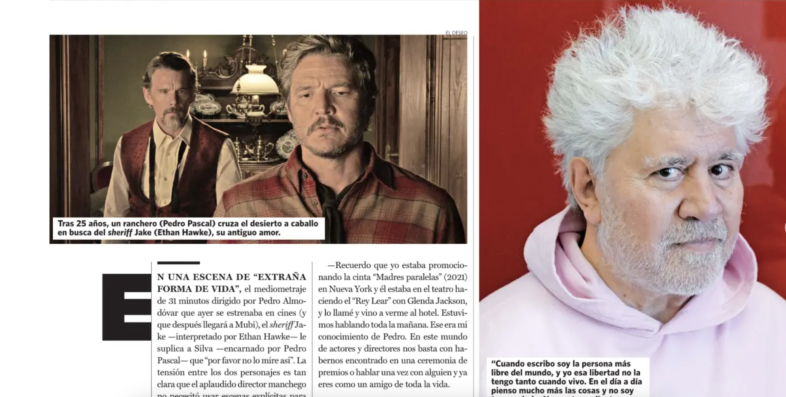
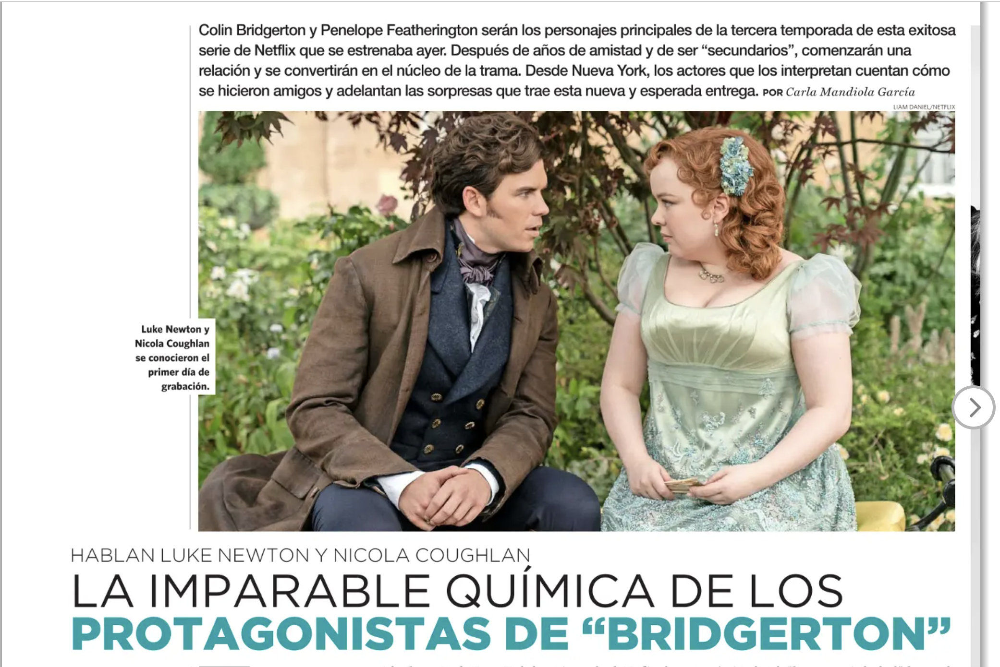

En 36 años de carrera, el actor
británico nominado al Oscar
formará parte por primera vez del
universo de la Guerra de las
Galaxias del que se declara
fanático: acaba de estrenar la serie
“Skeleton Crew: Viaje a lo
Desconocido”, donde interpreta a
un enigmático personaje que viaja
por la galaxia con un grupo de
niños.
Shimanami Kaido es una de las mejores experiencias que se pueden vivir arriba de una
bicicleta en este país: en uno o dos días se pueden recorrer seis islas conectadas por
puentes que unen pequeños pueblos con olor a cítricos, en un paraíso con —todavía—
muy pocos turistas.

“Extraña forma de vida” es la
primera película western del
premiado director español. Y dura
solo 31 minutos. En ella, Ethan
Hawke y Pedro Pascal interpretan
a dos personajes en una tortuosa
relación. Sobre cómo llegó al
actor chileno, cómo creó algo
nuevo en un género donde casi
todo se ha hecho, y cómo sigue
nadando contra la corriente en el
cine, habla en esta entrevista
exclusiva.

Llegó el turno de Nicola Coughlan y Luke Newton: los actores que interpretan a
Penelope Featherington y Colin Bridgerton en la exitosa serie de Netflix serán los
nuevos protagonistas de la tercera temporada. Después de años de amistad y de ser
personajes subestimados, comenzarán una relación y se convertirán en el núcleo de la
serie. Desde Nueva York, los actores cuentan qué fue lo más difícil del rodaje y cómo
se siente trabajar juntos.

Recopilé los antecedentes de 407 futbolistas de los 16 clubes que juegan actualmente en la Primera División. Al cruzar
los datos, surgió una contundente radiografía que revela el origen del talento nacional en este deporte.
Gran parte nace en las comunas agrícolas. La Región de Tarapacá resultó ser una inesperada fábrica de jugadores.
Las zonas extremas no tienen representación. Y el centro del país sigue siendo la gran cuna de futbolistas,
aunque si se toma en cuenta la cantidad de habitantes, se impone una pequeña y tranquila ciudad: Quillota.

Investigué todas las películas
chilenas estrenadas entre 1969 y
lo que va de 2019 para ver cuántas
tenían a una mujer como
directora; cuántas tenían
protagonistas femeninas y qué
roles y profesiones representaban
ellas en pantalla. Los resultados
son sorprendentes: hay un 15% de
mujeres tras la cámara y solo un
30% en roles protagónicos. Aquí,
actrices, directores y directoras
analizan por qué para las mujeres
aún es difícil tener un espacio
propio.

¿Es posible que el micrófono del celular procese todo lo que hablamos, que Facebook e Instagram nos escuchen para dirigir su
publicidad? Una periodista de "Sábado" hizo el experimento y habló con especialistas tecnológicos, abogados y representantes de la
red social para averiguar si hay o no algo de qué preocuparse. Este reportaje ganó el Premio ESET al Periodismo en Seguridad Informática.

Ayaan Hirsi Ali fue islamita, su familia mutiló su cuerpo y su padre arregló su
matrimonio. Pero ella escapó y se convirtió en una activista por los derechos
humanos. Hoy, casada con el historiador Niall Ferguson vive bajo amenaza de
muerte.